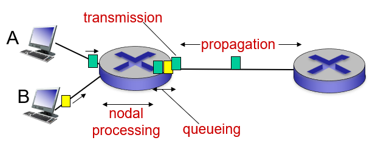

网络的组成
网络边界包括了主机（服务器和客户端，end system），服务器一般会位于数据中心。
网络核心：互联的路由器和由主干网络连在一起的各个小型网络。
连接网络的方式：有线、无线连接。
网络的访问：
- 数字用户线路 DSL（Digital Subscribe Line）
- 有线网络 Cable Network
- 家庭网络 Home Network
- 企业接入网络 Enterprise Access Network
- 无线访问网络 Wireless Access Network
通信链路：无线 wireless，有线 wired
- 有线：光纤 optic fiber，铜双绞线 TP (twisted-pair)
- 无线：电波 ratio
- 传输率 transmission rate：带宽 bandwidth，即为数据转化速率，二进制数转化为信号的速率
网络的核心部分
分组交换（Packet Switching）是指主机（hosts）会将应用层的消息（例如一封邮件或网页内容）分割成多个小的“数据包”（packets）。这些小数据包通过网络独立传输，而不是一次性传输整个消息。
分组交换需要交换机和路由器，其中路由器会根据路由算法计算得到路由表（Routing），然后根据路由表进行转发（Forwarding）。如果多个数据包汇聚在一起，则会导致排队或者更严重的丢包。
另一种是电路交换（Circuit Switching），是点对点的数据传输，对每一对设备，网络会将这条线路的资源让出来，专为这两个设备进行通讯。电路交换的每条线路是专用的，所以数据传输效率高，但是资源利用率低。
网络的计算
延迟
延迟（delay）包括了以下四种延迟：
- \(d_{\text{proc}}\): 处理延迟（processing delay），处理数据包造成的延迟（检测数据包正确性、决定输出端口等），延迟很小
- \(d_{\text{queue}}\): 排队延迟（queueing delay）
- \(d_{\text{trans}}\): 传输延迟（transmission delay），0/1 二进制转化为信号的延迟
- \(d_{\text{prop}}\): 传播延迟（propagation delay），信号在链路上走的时间
总延迟为：\(d_{\text{nodal}}=d_{\text{proc}}+d_{\text{queue}}+d_{\text{trans}}+d_{\text{prop}}\)

其中传输延迟和传播延迟是最为重要的两种，体感的延迟也主要来源于这两个。
带宽
带宽（bandwidth）是指路由器或网卡将二进制数转化到链路上的电信号或者光信号的转化速率，单位是 bps，Kbps，Mbps，Gbps。这里的 bps 是指 bits per second，这些单位之间是千进制，即
\[ \begin{align*} &1000\,\mathrm{bps}=1\,\mathrm{Kbps}\\ &1000\,\mathrm{Kbps}=1\,\mathrm{Mbps}\\ &1000\,\mathrm{Mbps}=1\,\mathrm{Gbps}\\ \end{align*} \]
高带宽在更短的时间内转化一个 bit，即带宽越高，传输延迟 \(d_{trans}\) 越小。
比特的宽度为一个比特在 \(d_{trans}\) 内所走的距离，有
\[ \text{bit-width}=\dfrac{v}{R}=\dfrac{l}{R\cdot d_{prop}} \]
其中 \(v\) 为信号在线路上的传输速度，\(R\) 为带宽，\(l\) 为传输距离。
吞吐量
网络的吞吐量（Throughput）为单位时间中通过网络中的一段系统的 bit 数，单位是 bit/s。如果选择一条链路，带宽是理论上最大的通过量，而吞吐量是实际值。
一个网络系统的吞吐量由其中的瓶颈链路决定。
网络模型
网络协议
网络协议规定了数据包里的格式，数据包发送接收的顺序。如果遵循这个协议那么发送方和接收方同时满足这个协议的要求。
任何一份公共的网络协议都有对应的文档，记录在 RFC（Request for Comments）中。
TCP/IP 协议栈
总共分为 5 层，从上到下分别为：
- 应用层 Application Layer
- 应用层的数据包被称为 Message/Data
- 传输层 Transport Layer
- 传输层的数据包被称为 Segment
- 网络层 Network Layer
- 网络层的数据包被称为 Datagram
- 链路层 Link Layer
- 链路层的数据包被称为 Frame
- 物理层 Physical Layer
ISO/OSI 7 层协议栈在应用层和传输层中增加了 presentation 和 session。
并不是所有的设备都有这 5 层协议，终端设备都具有，交换机仅有链路层及以下，路由器仅有网络层及以下。